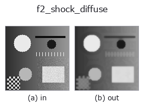

edges op• Data kinds: image → image
• Call: fullseye.apply(img, "f2_shock_diffuse", a=0.5, b=0.5) (2-D model = एक image + दो scalar knobs a,b∈[0,1])

*Figure synthetic 128×128 input पर सच में चलाकर मिला output है। बाईं ओर input, दाईं ओर output। Point clouds ऊपर से देखे गए scatter के रूप में (brightness = z), 1-D series line के रूप में, volumes z दिशा में maximum-intensity projection के रूप में, videos बीच के frame के रूप में, complex images amplitude के रूप में, और जो return values चित्र नहीं बन सकते वे स्वयं values के रूप में दिखाए जाते हैं।*
Knob a को बदलकर (0.1 / 0.5 / 0.9, दूसरा knob default पर):
▸ f2_shock_diffuse: knob a को बदलने का figure (docs site)
Knob b को बदलकर (0.1 / 0.5 / 0.9, दूसरा knob default पर):
▸ f2_shock_diffuse: knob b को बदलने का figure (docs site)
दूसरी images पर भी (synthetic scene / photo / coins। ऊपर की row में inputs, नीचे की row में उनके outputs। Knobs default पर):
▸ f2_shock_diffuse: दूसरी images पर output (docs site)
*चौथा column colour (H,W,3) input है। यह op channels को पार किए बिना colour संभालता है (colour channel को तीसरे spatial axis की तरह convolve नहीं करता)।*
Regularised shock filter: पहले diffuse, फिर shock, बार-बार दोहराया जाता है (Alvarez-Mazorra)।
> नीचे का विस्तृत विवरण मूल text में है — सारांश और headings का अनुवाद हो चुका है।
f2_shock is the pure Osher-Rudin shock — *contraction only*. It takes the sign of the Laplacian of the raw image, so every noise bump is a zero crossing and becomes its own shock: on a blurred edge with sigma 0.02 noise it raises the flat-area noise from 0.020 to 0.050 (2.5x) and pushes the edge step to 0.539 — past the true step of 0.500, which is the noise being promoted to structure rather than the edge being recovered.
The remedy is to alternate the two flows: expand (a Gaussian diffusion) and contract (the shock), taking both the sign *and* the dilation/erosion from the smoothed copy, so the contraction can only act on structure the diffusion left standing.
a sets the number of diffuse/shock pairs (1..10); b sets the diffusion width sigma (0.4..2.0) and is the trade-off knob. Measured on that same blurred noisy edge (input: step 0.112, flat noise 0.0201):
b = 0.00 (sigma 0.40) step 0.407 noise 0.0245 (x1.2)
b = 0.10 (sigma 0.56) step 0.272 noise 0.0091 (x0.45 - noise falls)
b = 0.25 (sigma 0.80) step 0.218 noise 0.0054
b = 0.50 (sigma 1.20) step 0.187 noise 0.0032
b = 1.00 (sigma 2.00) step 0.099 noise 0.0016
So b near 0 keeps most of the sharpening with almost none of the noise amplification; from b about 0.1 upward the filter removes noise while still more than doubling the input's edge step.
Applicability. (1) It sharpens what is already there — it cannot recover detail the blur destroyed, and the step never reaches the true 0.500 here.
(2) Every iteration is a morphological max/min, so thin bright lines thicken
and thin dark lines are eaten; count the iterations you can afford.
(3) With b large the diffusion dominates and the result approaches a plain
Gaussian blur — check that the step is still above the input's.
• gallery2d_edges family guide
• Sample data catalog (DL URL / license) — 2-D के लिए skimage.data (BSD/public) + synthetic, 3-D के लिए real data sources (Stanford/PDS आदि) के DL URL।
• Operators का स्रोत और संदर्भ — इस op family के मूल research/methods के स्रोत।
• Algorithm का मानक स्रोत (लेखक, वर्ष) और उपयोग ऊपर की family usage guide में दिए गए हैं।
नीचे का program सच में चलता है, यह जाँचा गया है (figure वाला ही input)। Studio की help में यह block buttons बन जाता है, जिनसे इसे वहीं load करके चलाया जा सकता है।
f2_shock_diffuse 0.40 0.50
▸ यह pipeline load करें · Load करके चलाएँ
• gallery2d_edges — py -3.11 examples/gallery2d_edges.py
image को input के रूप में लेते हैं)identity · gaussian · mean_box · bilateral · unsharp · median · min_filter · max_filter
edges)sobel_mag · prewitt_mag · roberts_mag · dog · edge_transition_width · grad_dir · log · corner_response
*Provenance: ops.py — 2D operator registry. यह per-op note tools/opdocs.py md से अपने-आप generate होता है (हाथ से edit न करें)।*
© 2026 Kazufumi Furuse — Fullseye operator documentation. Licensed under Apache-2.0.